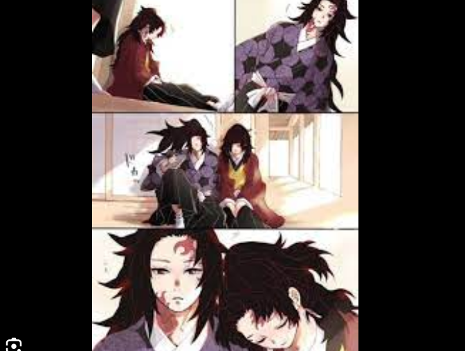
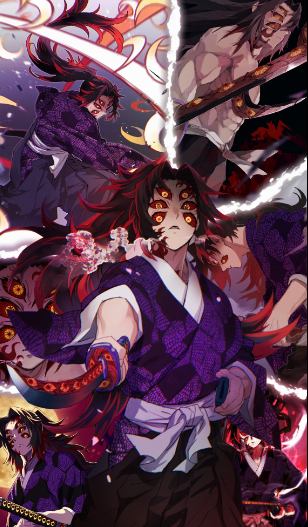
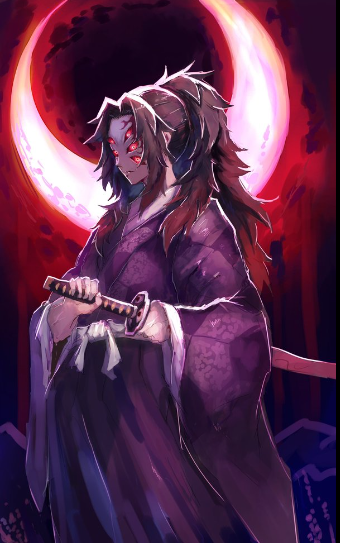
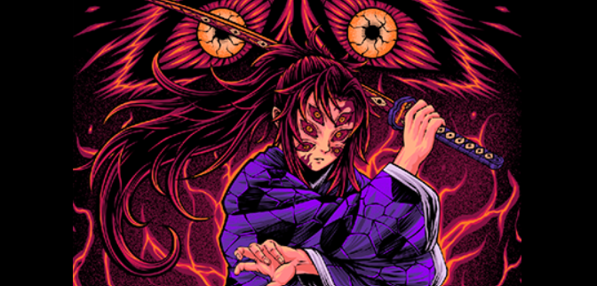

Welcome to the Kokushibo Fan Page
Explore the world of Kokushibo, one of the most powerful demons in the Demon Slayer universe.
About Kokushibo
Kokushibo, originally named Michikatsu Tsugikuni, is a powerful demon who holds the position of Upper Rank One in the Twelve Kizuki. He was once a human and the twin brother of Yoriichi Tsugikuni, the strongest Demon Slayer to ever exist. Kokushibo became a demon over 400 years ago after being unable to surpass his brother's abilities and fearing death.
Abilities
- Breath of the Moon: Kokushibo's unique breathing style, derived from the Breath of the Sun, allows him to perform powerful sword techniques.
- Regeneration: Like other demons, Kokushibo possesses incredible regenerative abilities, allowing him to heal from most injuries rapidly.
- Enhanced Strength and Speed: His demon physiology grants him immense physical strength and speed, surpassing most other demons and Demon Slayers.
- Multiple Eyes: Kokushibo has multiple eyes that enhance his perception and combat abilities, allowing him to foresee and counter his opponents' moves.
Gallery


